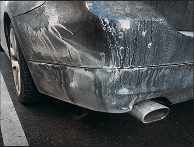

Garbage disposal tips
Have you ever been using your garbage disposal and have it randomly stop working? You flick the switch and nothing happens but you are sure that it didn’t break and that it is still has power? This tip might help you!
 VS code tips
VS code tips
Do you use VS code for working on websites or other coding projects? If you do, you might be interested in some of the tips I have written down here!

Cold weather car tips
New to owning a car in a snowy place or just owning a car at all? Here are some useful tips that might help save you a lot of headache down the road!
 File Compression tips
File Compression tips
Having trouble with .zip or .7z files? Want to store large documents on your computer for the future but hate how slow it takes to compress them? If so, some of the tips here might interest you!